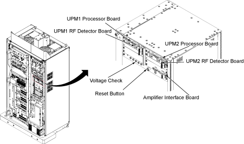
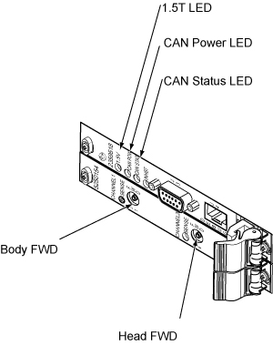

- 00000018WIA30288F20GYZ
- id_131067782.0
- Jul 19, 2019 11:00:42 AM
CAM Lite2 ASC Part Theory and Troubleshooting
Diagnostics
There are UPM Diagnostics that can be found on the Common Service Desktop. Details on these diagnostics can be found in Peripheral Diagnostics.
Reference Documents / Vendor Manuals
-
FRU Manual
-
Block Diagrams
LED Descriptions
Input Panel
Connections to input power and CAN communication. ON/OFF switch for entire ASC-Lite Chassis. Reset Button will reset both UPMs; however, any measured RF power from the scanner is NOT reset. Voltage banana jacks are for checks of the power supply.

Power Supply
The power supply provides 3.3V, 5.0V, +12V and –12V to the UPM processor UPM detector boardsand RF interface baords.
Processor Board
The processor board for UPM1 and UPM2 are identical. These boards collect sample data from the detector boards, calculate the RF power and inhibit the scan if the trip limits have been exceeded or if some other UPM error occurs
RF Detector Boards
ASC-Lite has 2 RF detector boards. Each RF detector boards are identical. These boards convert measured RF power into a digital signal that is sent to the processor boards. Each board has two channels and each channel has 3 RF input ports, see details in the table below.
| DETECTOR BOARD | NARROW BAND RF DETECTOR BOARD |
| Channel 1 FWD | Body Forward |
| Channel 2 FWD | Body Forward |
RF Interface Boards
This board permits the host to control and monitor the operation of the SRFD3. The board controls the Narrowband RF amp.
UPM1 / UPM2
Every system contains two (redundant) UPM’s. These UPM’s are identical and boards can be swapped between the two for troubleshooting; see UPM Board Swap Procedure for details.

| LED NAME | DESCRIPTION |
| Sense | If ON, the RF Detector board is detecting RF input signal into one of the 3 ports on that Channel. If the Sense LED is OFF, then no signal is detected on that channel. |
| 1.5V | 1.5V as reference voltage made in board. |
| CAN Power | If ON, the 24V from the CAN power supply is detected. Note that this voltage is provided via the CAN communication cable connected to the UPM Processor board. So, this LED should be ON even if the UPM is powered down. |
| CAN Status | If the CAN status blinks once, then the processor board is attempting to communicate with the MGD host. If the LED blinks twice, then the processor board is communicating with the MGD system. If LED remains OFF, then the processor board is not attempting communication with the host. |
| Inhibit | If this LED is ON, then the UPM has detected some sort of fault and has inhibited any scanning. The LED will remain ON until the fault is cleared. Check the error log for details on the fault. For excessive power faults, it will clear once the power level is less than 99% of the trip limit. |
UPM Calibration Troubleshooting
Theory
The UPM calibration runs a pcal scan and adjusts digital attenuators internal to the UPM to match the expected RF signal level.
The UPM calibration parameters found in the UPM calibration files are used in the calibration/functional check program. The program code sets the digital attenuators in the UPM based on the results of the 3 calibrations per channel (forward, reflected and hybrid reflected (if applicable)), and a comparison to these UPM calibration parameters. This calibration file is accessible from within the UPM calibration tool from the “File” pull down menu, “Edit Config” option.
The final UPM digital attenuator values are written to the UPM Calibration Configuration files (UpmCal1.cfg, UpmCal2.cfg) located in directory: w/config. There can be substantial variation in these calibration values from port to port, or on the same port following the replacement of any hardware.
Prior to starting the troubleshooting of the UPM, you can save the current calibration files as the Default backup. This can be done by entering the UPM calibration tool, selecting File and BKUP UPM Cal. After troubleshooting, if the UPM is restored in its original configuration (ie, each board is in its original location) you can restore the backup calibration file by opening the UPM calibration tool, selecting File and Restore BKUP UPM Cal. (The following error message may appear: "Warning: single selection listbox control requires that the Value be an integer range. Control will not be rendered until all of its parameter values are valid."….this error can be ignored)
Troubleshooting
If the UPM calibration fails, first check the system error log. Use the Problem/Solution Table in Section 7 to troubleshoot the errors in the error log. If Problem / Solution Table does not solve the calibration errors, attempt the following steps:
-
Quit UPM Calibration tool, end any open exams and TPS reset.
-
Open a new exam, Patient ID: geservice, weight: 111 lbs.
-
Select Service, Other.
-
Select apb cal (series 1 if t/s body and series 2 if t/s head).
-
Select Save Series.
-
Make sure that the correct hardware setup exists (ie cables connections and dummy load connections match setup in documentation).
-
Click on Manual Pre-scan.
-
Change TG to 200 if troubleshooting UPM Forward Power Calibration.
-
Click on Scan TR.
-
Check for inhibit light on ASC/UPM Chassis, Driver Module.
-
Check for Sense LED’s flashing on the correct channel (both RF Detector boards should have one of the channel’s Sense LEDs flashing, matching the Channel you are troubleshooting).
-
Stop MPS.
The system must be able to scan with the correct UPM Sense LEDs flashing prior to running the calibration. If the Sense LEDs are not flashing, check the error log to determine if the scan was stopped. Also check that the hardware setup is correct.
If setup and system are okay but the Sense lights are not flashing, make sure RF is getting to the UPM by placing a 50 Ohm terminator in the port you are troubleshooting and the UPM RF cable into a 50ohm terminated scope. Make sure you see a RF signal, if no signal exists, attempt reading at various points along the cable path to determine where the signal is lost. If a signal exists, attempt swapping/replacing RF Detector boards.
UPM Functional Check Troubleshooting
The UPM Functional check runs a prescribed scan in the RF Chain selected. It compares the measured RF power from the UPM to the expected value in a config file. If the values do not fall within 12%, then the functional check will fail.
In addition, the functional check confirms the UPM will stop scanning if the RF measured exceeds the trip limit
If the functional check fails to run, first check the system error log. Proceed toProblem / Solution Table for troubleshooting UPM system errors.
If the functional check fails due to inaccurate power measurement recalibrate the UPM then attempt the functional check again
Problem / Solution Table
| FAULT DESCRIPTION | PROBLEM DESCRIPTION | GE FIELD ACTION |
| EM_SCP_STOP_ACTION_UPM_ERRORUniversal Power Monitor error occurred. | General fault | This is a general UPM fault; view other errors in error log for more details. |
| EM_POWER_FAULT_WARNINGPower Monitor Warning: % percent of limit reached for the XX Average. | General high power warning | This is a general warning that the scan approached the Peak RF power limit. No action required. |
EM_LARGE_DIFFERENCE_DETECTED. Large difference was detected
between the two Power Monitors. Difference is in the (Long/short term)
Average.
| The power levels detected by the UPMs differ greatly.
|
|
| EM_UPM_FPGA_SN_FLTThe (UPM1/2) has detected that the FPGA was unable to read serial number information. | The FPGA was unable to read serial number information from (RF Detector/RF Processor)UPM board. This could be caused by an old revision of FPGA code or a hardware problem. |
|
| EM_UPM_PWR_FLT_DETECTThe (UPM1/2) has detected an Invalid Power Fault on the (Head/Body/MNS/CW) Amplifier. | The UPM detected RF power out of an amplifier port that should not have been producing RF at that time. |
|
| EM_UPM_PWR_LIMIT_EXCEEDThe (UPM1/2) detected a Power Fault on the (Short/Long Term) Average.Calculated Average =XXLimit =XX | This indicates that the UPM detected power that exceeded the trip limit for the area scanned |
|
| EM_RF_NB_BOARD_MISSINGNB Detector Board Missing | UPM detects that a NB RF Detector board is missing |
|
| EM_BUS_SELFTEST_FAILThe UPM1/2 failed its BUS Self Test on
the XXChannel Expected Data : X% Detected Data : Y% | This is a failure of the data bus from the RF detector board, through the ASC backplane to the processor board. |
|
| EM_DAC_SELFTEST_FAILThe (Upm1/2) failed its DAC Self Test on
the XX Channel. Expected Data : X Detected Data : Y | This is a failure of the digital to analog converter on the RF detector board. |
|
| EM_LUT_SELFTEST_FAILThe (UPM1/2) failed its LUT Self Test on
the XX Channel. Expected Data : 0x%x. Detected Data : 0x%x. | The LUT = Look up Table. This is a failure of the processor board. |
|
| EM_NB_LUT_TABLE_LOAD_FAILThe UPM1/2 Look Up Table Failed on the Narrow Band RF Detector board.Number of Write Failures: ## | The LUT = Look up Table. This is a failure of the processor board |
|
|
EM_SCP_UPM_SHORT_TERM_REG_FAIL (Head/Body/Extremity/Other) Short Term Limit Write Fail. Head Present Limit: XX Body Present Limit: XX Extremity Present Limit: XX Other Present Limit: XX | A value written to the register was read back as a different value. | Don’t change any hardware, as this could normally appear during resets or when s/w out of sink with the UPM. If the failure continues, replace the processor board. |
|
EM_SCP_UPM_LONG_TERM_REG_FAIL (Head/Body/Extremity/Other) Short Term Limit Write Fail. Head Present Limit: XX Body Present Limit: XX Extremity Present Limit: XX Other Present Limit: XX | A value written to the register was read back as a different value. | Don’t change any hardware, as this could normally appear during resets or when s/w out of sink with the UPM. If the failure continues, replace the processor board. |
| EM_UPM_CALIBRATION_FAILThe (UPM1/2) detected a Calibration failure on the ADC.Calibration Pass BitMap = XX | The Analog to Digital converter on the RF Detector board failed to autocal properly. |
|
| EM_UPM_CAN_SELFTESTThe (UPM1/2) failed its CAN selftest.The CAN module on the DSP failed its self test procedure… | The fault indicates a failure in the CAN DSP, which is located on the UPM Processor board. |
|
| EM_UPM_FPGAThe (UPM1/2) Has Detected a FPGA error.Source of Fault is (one of the following):FPGA Read/Write failureFPGA INIT not ready | The fault indicates a failure in the FPGA which is located on the UPM Processor board. |
|
| EM_UPM_NOT_CALIBRATEDThe UPM1/2 has not been Calibrated.No Scanning will be Allowed until Calibrated. | This fault occurs when the UPM has not been calibrated. | Calibrate the UPM and perform the UPM functional check. |
EM_UPM_PS_FAULTThe (UPM1/2) Has Detected a Power Supply Fault.
Source of Fault is (one of the following):
Note: the fault indicates RF, then proceed to next row in this table. | This fault occurs when the UPM processor board detects incorrect power from the power supply. This is due to a failed power supply, backplane, processor board or a processor board or power supply that is not seated correctly in its slot. |
|
EM_UPM_PS_FAULTThe (UPM1/2) Has Detected a Power Supply Fault.Source
of Fault is (one of the following):
| The issue is either with a supply voltage on one of the detector boards or with the monitoring of that supply voltage on the associated UPM Processor board |
|
| EM_UPM_FILE_OPEN_FAILUnable to open the YY file. Please fix and TPS Reset. | Caused due to software config file missing | Error should state the file name and location. Attempt restore info; otherwise a s/w load may be required. |
| EM_UPM_CAL_FAIL_EMULATEDUnable to Calibrate the UPM because it is emulated out. Please remove emulationand TPS Reset. | UPM is emulated out | Remove UPM emulation from mgd_stage file. TPS reset and recalibrate. |
| EM_UPM_CAL_FAIL_FILE_OPENUPM Calibration failed due to failure to open XX file. | Caused due to software config file missing. | Error should state the file name and location. Attempt restore info; otherwise a s/w load may be required. |
| EM_UPM_CAL_FAIL_POWER"UPM Calibration failed due to failure to converge on a calibration point. Verify that power is applied on the proper channel on the UPM." | UPM calibration failure, the UPM attempted to calibrate to applied power; however, could not match value required | Go to UPM Calibration Troubleshooting, UPM calibration troubleshooting |
| EM_UPM_CAL_TIMEOUT"UPM Calibration failed due to a timeout on the Calibration process.Verify that the UPM is powered up and all cables are connected properly." | UPM calibration failure, the UPM attempted to calibrate to applied power; however, could not match value required | Go to UPM Calibration Troubleshooting, UPM calibration troubleshooting |
UPM Board Swap Procedure
UPM Board Swap Test
If either the Processor Board or RF Detector boards are swapped, the UPM calibration and functional check must be run prior to patient scanning.